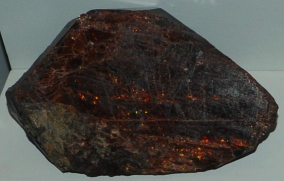

|

| (Ce,La,Nd,Th)PO4
These samples of monazite are displayed in the Smithsonian Museum of Natural History. Monazite is a phosphate mineral of cerium, lanthanum, neodymium and thorium with the composition (Ce,La,Nd,Th)PO4. The sample at left is about 12 cm across and is from San Juan, Argentina.
The color range for monazite is usually yellow to reddish brown.
|